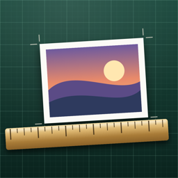

Inchwork
Print photos at the exact size you choose, on the printer you already have. Several to a page, so less paper goes to waste.
How it works
From photo to print
- Start a sheet. Pick Letter, Legal, A4 or photo paper, or start from a layout such as wallet photos, gift tags or a sticker sheet.
- Add photos. From your library, from Files, or paste an image you copied.
- Choose a size. Tap a common size like 4 × 6 or 5 × 7, or type an exact size in inches or centimeters. Fill crops to the shape; Fit keeps the whole photo.
- Print. Inchwork checks sharpness and margins, then prints at 100% scale. You can also save an exact-size PDF.
Help
Questions
- My print came out a little small or large.
- Many printers shrink or stretch a page by a percent or two. Open Settings and choose Calibrate a Printer. Print the test page, measure lines A and B with a ruler, and enter what you measured. Inchwork corrects every later print to that printer.
- Which scaling should I use in the print options?
- Leave it at 100%, and choose the same paper size as your sheet.
- What does the PPI number mean?
- It is how many photo pixels land on each inch of paper. 240 or more looks sharp. Below 160 a photo may look soft, so try a smaller size.
- Why is part of my photo outlined in red?
- It runs past the dashed margin or overlaps another photo. Most home printers can't print right up to the paper edge. Move it, make it smaller, or tap Arrange.
- Can I print borderless?
- If your printer supports it, set Page Margin to None in Settings and choose borderless photo paper in the print options.
- Contact
- Email tajimaru1209@gmail.com. We usually reply within a few days.
Privacy policy
Your photos stay on your device
- Inchwork itself does not collect or share any personal data.
- Photos you add are copied into the app on your device only, and are removed when you delete the sheet or the app.
- Inchwork only sees the photos you pick. It does not ask for access to your whole library.
- There are no accounts. Photos go only to the printer you choose and are never uploaded.
Advertising
Inchwork shows ads provided by Unity Ads. To deliver and measure ads, Unity may collect a device identifier (IDFV), approximate location from the IP address, and which ads are shown and tapped. The app shows non-personalized ads only and does not ask for permission to track you with the advertising identifier (IDFA). Unity never receives your photos. See the Unity Privacy Policy.
Last updated 1 November 2026. Questions about privacy: tajimaru1209@gmail.com.